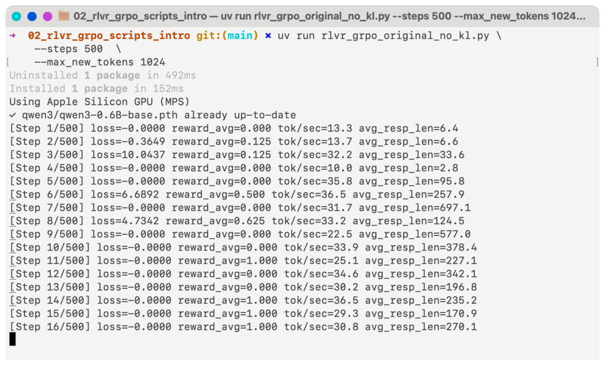
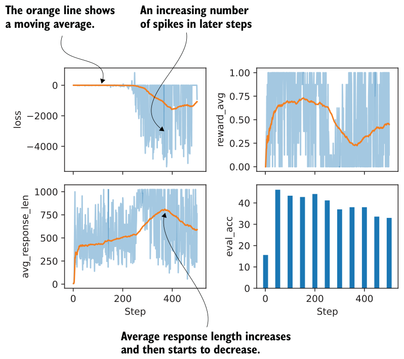

7.2.1Executing a GRPO training run
The code in chapter 6 was designed to strike a balance between implementing the complete GRPO pipeline and keeping the implementation compact enough to remain readable. For convenience, the book’s supplementary materials include an equivalent script that contains the same code and can be run from the terminal (more on this later): https://mng.bz/oZxN.
For each GRPO improvement introduced in this chapter, we’ll use related reference scripts from the supplementary materials to avoid duplicating large code blocks in the text. The helper function in listing 7.1 will download the relevant scripts from the supplementary materials and save them locally for you to use in this chapter. This will let us avoid repeating long code passages and keep the focus on the main changes in the GRPO implementations.
from pathlib import Path
import requests
def download_from_github(rel_path, out=None):
github_raw_base = (
"https://raw.githubusercontent.com/rasbt/"
"reasoning-from-scratch/refs/heads/main/"
)
rel_path = Path(rel_path)
out = Path(out) if out is not None else Path(rel_path.name)
if out.exists():
size_kb = out.stat().st_size / 1e3
print(f"{out}: {size_kb:.1f} KB (cached)")
return out
r = requests.get(github_raw_base + rel_path.as_posix())
r.raise_for_status()
out.write_bytes(r.content)
size_kb = out.stat().st_size / 1e3
print(f"{out}: {size_kb:.1f} KB")Using the preceding helper function, you can download the script with the GRPO training code from chapter 6 as follows:
download_from_github(
"ch06/02_rlvr_grpo_scripts_intro/rlvr_grpo_original_no_kl.py"
)You should see the following output: rlvr_grpo_original_no_kl.py: 13.4 KB. If the downloaded file is much smaller than the size listed here, the download may not have completed correctly. In that case, double-check the URLs and see the troubleshooting guide for additional suggestions: https://github.com/rasbt/reasoning-from-scratch/blob/main/troubleshooting.md. The resulting script can be run from a terminal as shown in figure 7.3.
It’s also possible to run the training script from a code cell in a Jupyter Notebook by
prepending “!”, that is, !uv run rlvr_grpo_original_no_kl.py.If you are not a uv user, replace the uv run shown in figure 7.3 with python, as follows:
python rlvr_grpo_original_no_kl.py \
--steps 500 \
--max_new_tokens 1024
If you prefer not to run the training code yourself, which is reasonable given its computational cost, the supplementary materials provide log files from this run. You can download them as follows:
download_from_github(
"ch07/02_logs/ch06_rlvr_grpo_original_no_kl_metrics.txt"
)
download_from_github(
"ch07/02_logs/ch06_rlvr_grpo_original_no_kl_metrics.csv"
)The first file, ending in .txt, is the plain output file that shows output statistics similar to those in figure 7.3. The second file, ending in .csv, is a comma-separated values file that provides more structure for this information, making it easier to extract and plot the data for further analysis.
7.2.2Inspecting the GRPO training run
To inspect the training run, we can plot the results from the log files using Matplotlib. We’ll define a plotting function that we’ll use throughout this chapter.
import csv
import matplotlib.pyplot as plt
def moving_average(values, window_fraction=0.25):
window_size = max(1, int(window_fraction * len(values)))
smoothed = []
for i in range(len(values)):
start_idx = max(0, i - window_size + 1)
window_mean = sum(values[start_idx : i + 1]) / (i - start_idx + 1)
smoothed.append(window_mean)
return smoothed
def plot_grpo_metrics(csv_path, columns, save_as=None):
data = {name: {"steps": [], "values": []} for name in columns}
with Path(csv_path).open(newline="") as f:
reader = csv.DictReader(f)
for row in reader:
if not row or not row.get("step"):
continue
step = int(row["step"])
for name in columns:
value_str = row.get(name)
if value_str:
data[name]["steps"].append(step)
data[name]["values"].append(float(value_str))
fig, axes = plt.subplots(2, 2, sharex=True, figsize=(6, 4))
axes = axes.ravel()
for i, name in enumerate(columns):
steps = data[name]["steps"]
values = data[name]["values"]
if not values:
fig.delaxes(axes[i])
continue
if name == "eval_acc":
axes[i].bar(steps, values, width=20)
else:
axes[i].plot(steps, values, alpha=0.4)
axes[i].plot(steps, moving_average(values))
axes[i].set_ylabel(name) for j in (2, 3):
if axes[j] in fig.axes:
axes[j].set_xlabel("Step")
plt.tight_layout()
if save_as is not None:
plt.savefig(save_as)
plt.show()The .csv file we downloaded has multiple columns. Using the plot_grpo_metrics function we defined in listing 7.2, we can plot the loss, average reward, average response length, and evaluation accuracy:
plot_grpo_metrics(
"ch06_rlvr_grpo_original_no_kl_metrics.csv",
columns=["loss", "reward_avg", "avg_response_len", "eval_acc"]
)The resulting plot is shown in figure 7.4.

A few general observations stand out in the plots shown in figure 7.4. The average response length should initially increase, ideally, along with an improvement in accuracy, which is largely what we see here, although there is a noticeable decline later in the run, just before step 400. Compared to LLM pretraining, which is outside the scope of this book and is covered in more detail in my previous book, Build A Large Language Model (From Scratch), the loss value itself is less informative and mainly serves as a sanity check. Overall, the loss should remain relatively stable. Some fluctuations are expected, but the larger spikes that appear halfway through the run are somewhat concerning.
The average reward should also increase over time. In principle, an average reward of 1.00 means that all sampled responses are correct, which is desirable, but it also means that the training signal has disappeared. At that point, further training is unlikely to be useful, and stopping early can save us time and resources.
Finally, performance on the external target task, here measured by MATH-500 accuracy, should improve. In this run, accuracy increases at first but then begins to decline, which points to problems and instabilities in the training process.
In summary, the training run shows fast gains early on, followed by diminishing returns after approximately 50 steps. One likely reason is that the underlying algorithm is not particularly stable over longer runs. Another possible explanation is that later training examples are more difficult, but this would not account for the decline in evaluation accuracy, which is computed from the same 500 MATH-500 test samples every 50 steps.
Note that the main goal of this section has been to introduce, analyze, and discuss various training metrics. We have focused on some basic ones, and in the next section we’ll extend this list and look at additional metrics that are commonly tracked during GRPO training.
Calculating evaluation accuracy
eval_acc), here measured on the MATH-500 benchmark, is not tracked by default during training. It can be computed periodically by adding the setting --eval_on_checkpoint 500 when running the training script, but this is not recommended because it significantly slows down training. Alternatively, it can be calculated separately after training using the evaluate_math500.py script introduced in chapter 3:download_from_github(
"ch03/02_math500-verifier-scripts/evaluate_math500.py"
)uv run evaluate_math500.py \
--dataset_size 500 \
--checkpoint_path \
"checkpoints/rlvr_grpo_original_no_kl/\
qwen3-0.6B-rlvr-grpo-step00050.pth"uv user, replace uv run with python.)